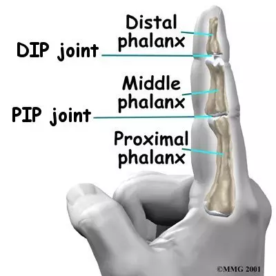

Finger Flexion Glove
Hardware module for Muscle to Movement at UBC that measures finger flexion angles to gamify at-home rehab for patients with multiple sclerosis.
Overview
One of the first projects I got involved with was through Muscle to Movement at UBC as a hardware engineer. I worked on gamifying rehabilitation for patients with multiple sclerosis, and replacing in-person physiotherapist sessions with guided module activities patients can do independently at home.
I focused on creating a module to measure finger flexion angles, adopting the techniques physiotherapists use to isolate PIP and DIP joint movements.

From camera tracking to hardware
First, I played around with motion tracking using MediaPipe Pose. You can try it below — turn on the camera, select the finger and PIP/DIP/MCP joint, and the dashboard shows the flexion angle.
That approach lacked accuracy and depth with a single camera, so I shifted to a physical prototype using flex sensors. Off-the-shelf flex sensors are too long to place on both joints without overlapping, so I created smaller versions tailored to each joint.

Custom-made flex sensor readings when bent
Technical details
ESP32 · Arduino Uno · Arduino IDE programming in C · custom flex sensors (learning how resistive flex sensing works to size and build my own).
What's next
With prototype one complete, I'll continue working on new adaptations in the coming semester.